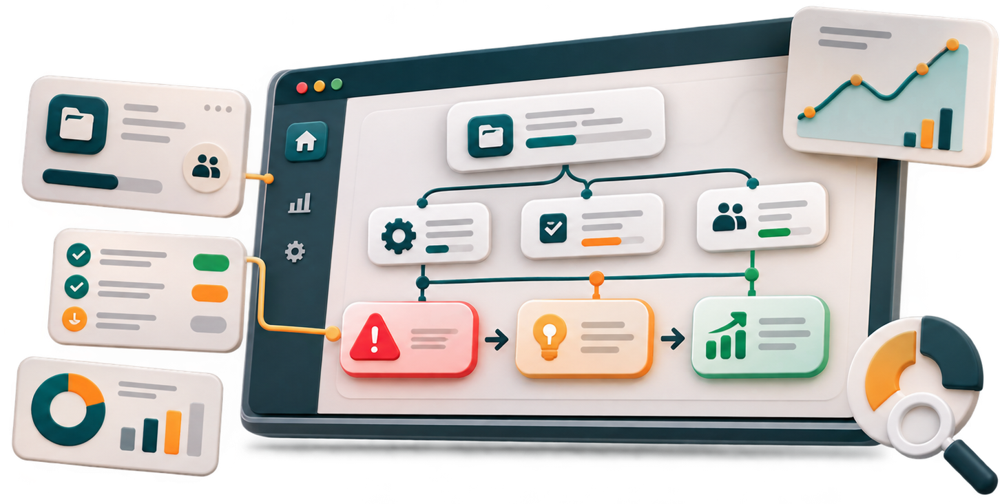
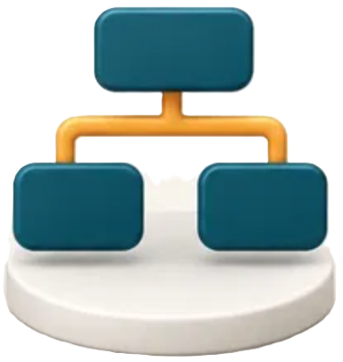

Manque de visibilité
Il peut être difficile d’avoir une vue claire sur l’état des projets, des processus et des tâches.
Causivue est une application web qui permet de suivre les projets, les processus et les tâches, tout en facilitant la compréhension des problèmes, de leurs causes et de leurs impacts.
Découvrir Causivue
Le suivi des tâches permet de connaître leur état d’avancement, mais il ne suffit pas toujours à comprendre les difficultés rencontrées. Lorsqu’un problème apparaît, il est important d’identifier son origine et de comprendre les éléments qu’il peut affecter.
Il peut être difficile d’avoir une vue claire sur l’état des projets, des processus et des tâches.

Lorsqu’un problème survient, son origine n’est pas toujours immédiatement identifiable.

Un problème peut affecter d’autres tâches ou éléments du projet. Il est donc important d’identifier ces impacts.
Causivue est une application web de suivi et d’analyse des activités d’un projet. Elle vise à offrir une meilleure visibilité sur les projets, les processus et les tâches, ainsi qu’à faciliter l’identification des problèmes, de leurs causes et de leurs impacts.
Suivre l’état d’avancement des tâches.
Consulter les informations liées aux projets et aux processus.
Identifier les problèmes rencontrés.
Comprendre les causes et les impacts associés.
Suivre les projets, les processus et les tâches pour comprendre leur état actuel.
Identifier et comprendre les causes associées aux problèmes rencontrés.
Identifier les tâches, les processus ou les projets concernés par un problème.
Causivue permet de visualiser les différents éléments d’un projet et de mieux comprendre les relations entre le travail réalisé, les problèmes rencontrés, leurs causes et leurs impacts.
Regrouper et organiser les activités d’un projet.

Structurer les différentes étapes ou activités du projet.
Suivre le travail à réaliser et son état d’avancement.
Identifier les difficultés rencontrées pendant la réalisation des tâches.
Comprendre l’origine des problèmes identifiés.
Identifier les éléments affectés par les problèmes.